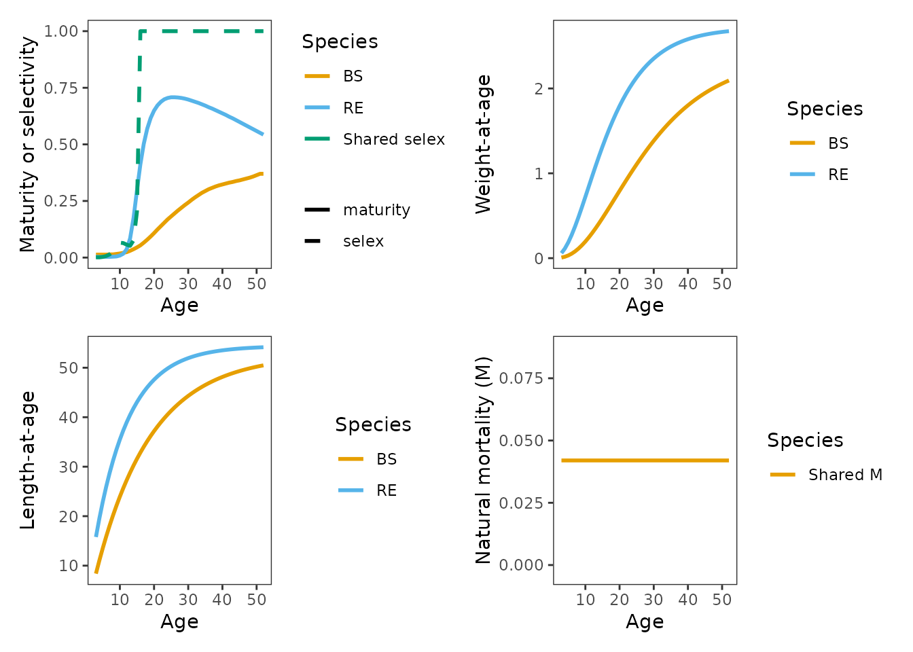
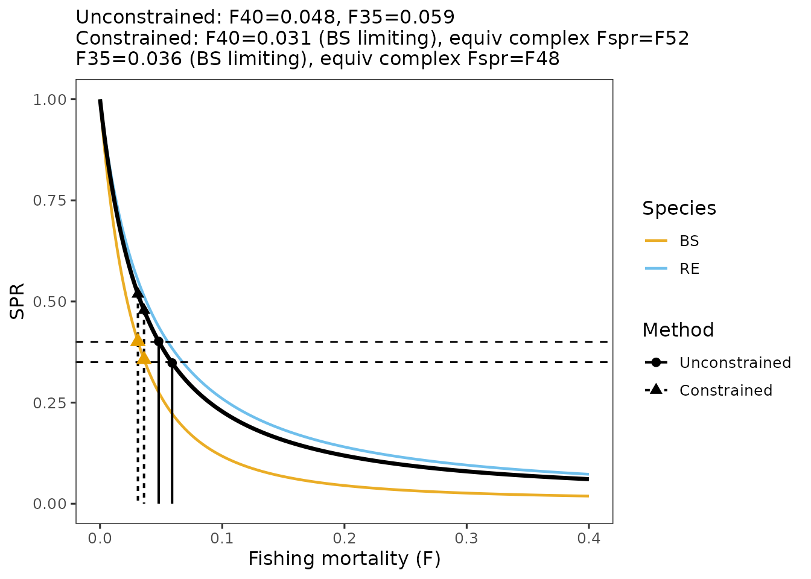
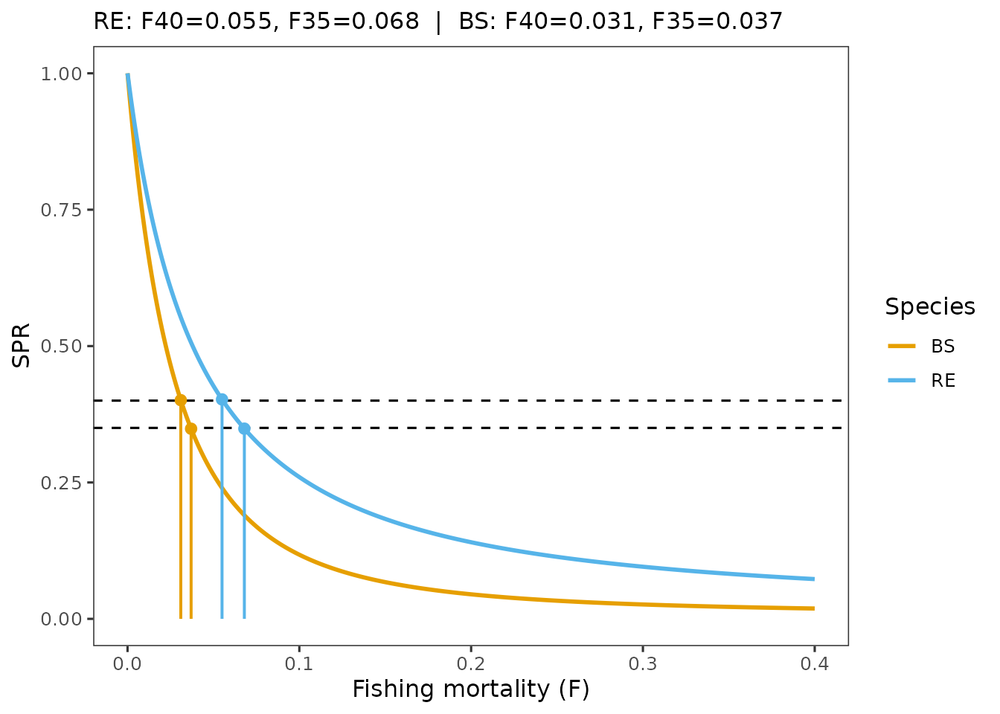
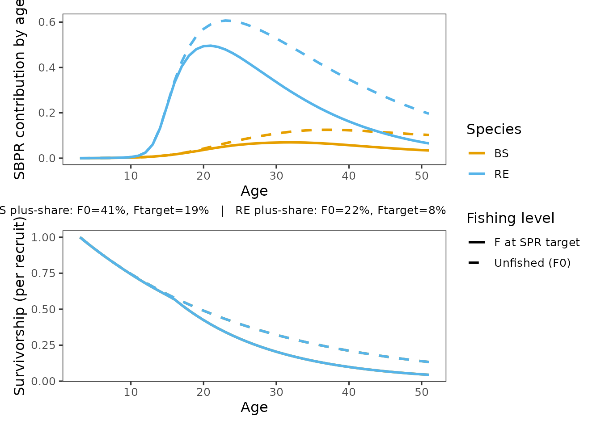
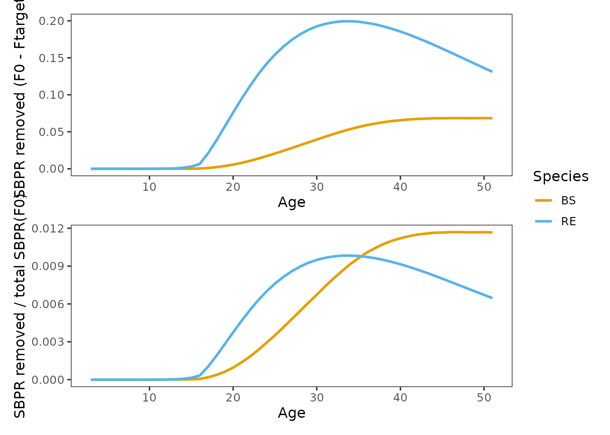
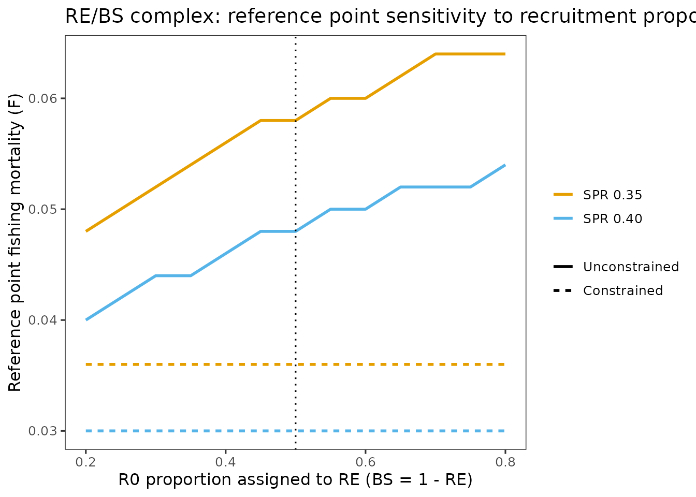
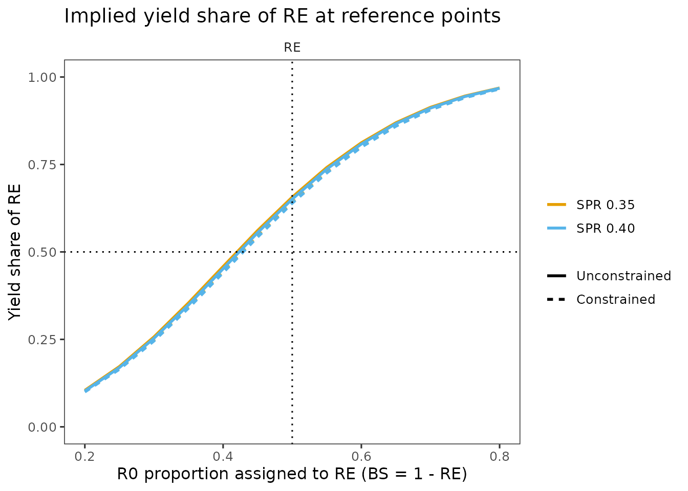

Multispecies Tier 4 workflow: Gulf of Alaska rougheye and blackspotted rockfish (RE/BS) complex
rebs_multispecies.Rmd
library(tier4tools)Background and objectives
This vignette demonstrates a multispecies Tier 4 workflow using the Gulf of Alaska rougheye and blackspotted (RE/BS) rockfish complex as a case study.
The objective is to show when multispecies Tier 4 methods are informative, how they are implemented in tier4tools, and how results and uncertainty can be communicated using standardized, SAFE-ready figures. Emphasis is placed on interpretation, rather than reproducing similar plots under multiple parameterizations.
Why a multispecies Tier 4 case study for RE/BS
Since 2008, the RE/BS complex has been assessed using a Tier 3 statistical catch-at-age model that combines rougheye and blackspotted rockfish into a single assessment unit with shared growth, maturity, and other biological processes. Persistent challenges, including model scaling, data fits, retrospective patterns, and the need to reconcile the two species’ distinct life histories, have highlighted limitations of this combined approach. Conservation concerns have increased in recent years as complex-level survey biomass has declined, particularly for blackspotted rockfish, a species with slower growth and later maturation that is expected to be less resilient to fishing pressure.
A single-species Tier 4 approach would require reliable, species-specific biomass or abundance indices to support catch allocation and scaling. In practice, species separation in the survey time series is limited, and field identifications are known to be imperfect based on genetic validation studies. Under these constraints, a multispecies Tier 4 per recruit model provides a transparent alternative for exploring how differences in life history and uncertainty in recruitment composition affect spawning potential ratio (SPR) reference points and the implied yield-per-recruit (YPR) for each species.
What is being varied in this vignette
This vignette focuses on two sources of uncertainty that are specific to multispecies Tier 4 applications:
Definition of multispecies reference points Two alternative approaches are evaluated.
Unconstrained total curve: The complex-level SPR curve is computed by summing species-specific SBPR across species, and the fishing mortality corresponding to a target SPR is identified on this combined curve.
Constrained approach (all species must meet the target): The reference is defined as the maximum at which each species meets the target SPR, and the combined curve also satisfies the target.
These approaches can yield different reference points when species differ substantially in productivity.
Recruitment proportions (R0 proportions)
Recruitment proportions determine how each species contributes to total spawning biomass per recruit (SBPR) and total YPR in the multispecies complex. Because recruitment composition is uncertain for the RE/BS complex, sensitivity analyses are conducted across a range of assumed proportions.
This sensitivity is implemented for two-species complexes only in tier4tools. The analysis is defined by the proportion assigned to the first species, with the second species receiving the remainder.
Life history and fishery inputs
The RE/BS case study uses ages 3 through 52, with a plus group at age 52 for both species. Growth is represented using von Bertalanffy length-at-age models and weight–length relationships estimated from fisheries-independent, genetically verified data. Maturity is modeled using species-specific functional maturity schedules that account for skipped spawning.
Fishery selectivity is based on the most recent Tier 3 statistical catch-at-age assessment and is assumed to be identical for both species. Selectivity is therefore represented by a fixed selectivity-at-age vector applied consistently across species.
ages <- 3:52
use_plus_group <- TRUE
# Recruitment proportions, base case is 50/50
rec_prop <- c(RE = 0.5, BS = 0.5)
# Natural mortality (assumed identical for both species)
M_val <- 0.042
# Functional maturity-at-age vectors (ages 3-52)
maturity_RE <- c(
0.004, 0.003, 0.003, 0.003, 0.003, 0.004, 0.005, 0.009, 0.017, 0.037,
0.085, 0.175, 0.297, 0.412, 0.503, 0.569, 0.616, 0.649, 0.672, 0.688,
0.699, 0.705, 0.708, 0.708, 0.707, 0.705, 0.702, 0.698, 0.693, 0.688,
0.683, 0.677, 0.671, 0.664, 0.658, 0.651, 0.644, 0.637, 0.630, 0.622,
0.615, 0.607, 0.599, 0.591, 0.583, 0.575, 0.567, 0.559, 0.551, 0.543
)
maturity_BS <- c(
0.013, 0.013, 0.013, 0.013, 0.014, 0.014, 0.016, 0.018, 0.021, 0.024,
0.030, 0.037, 0.045, 0.054, 0.066, 0.079, 0.093, 0.108, 0.124, 0.139,
0.154, 0.169, 0.182, 0.195, 0.208, 0.220, 0.232, 0.243, 0.255, 0.266,
0.276, 0.286, 0.294, 0.302, 0.308, 0.314, 0.319, 0.323, 0.327, 0.331,
0.334, 0.338, 0.341, 0.345, 0.349, 0.353, 0.358, 0.364, 0.370, 0.370
)
# Shared selectivity-at-age vector (ages 3-52)
selex_shared <- c(
0.001, 0.001, 0.003, 0.007, 0.014, 0.028, 0.048, 0.066, 0.064,
0.057, 0.052, 0.076, 0.203,
rep(1, length(ages) - 13)
)
# Growth (von Bertalanffy parameters in cm)
vb_RE <- list(type = "vb", Linf = 54.4, t0 = -0.36, k = 0.102)
vb_BS <- list(type = "vb", Linf = 52.6, t0 = 0.20, k = 0.062)
# Weight-length parameters (W = alpha * L^beta)
wl_RE <- list(type = "wl", alpha = 1.14e-5, beta = 3.098)
wl_BS <- list(type = "wl", alpha = 8.13e-6, beta = 3.177)Build the multispecies spr_input() object
spr_input() stores all life history schedules required
by the per recruit model. For multispecies inputs, the object contains a
species list with one element per species.
inp <- spr_input(
ages = ages,
species = list(
RE = list(
len_at_age = vb_RE,
wt_at_age = wl_RE,
maturity = list(type = "vector", m = maturity_RE),
selectivity = list(type = "vector", s = selex_shared),
M = M_val
),
BS = list(
len_at_age = vb_BS,
wt_at_age = wl_BS,
maturity = list(type = "vector", m = maturity_BS),
selectivity = list(type = "vector", s = selex_shared),
M = M_val
)
),
rec_prop = c(RE = 0.5, BS = 0.5),
use_plus_group = TRUE
)Note: in a two species example, recruitment proportion sensitivities
will typically be implemented by storing baseline recruitment scaling as
R0_base for each species and then rescaling R0
inside spr_sensitivity(). In this vignette, we treat
R0 as the recruitment scaling inside
spr_input() and vary those scalings through the sensitivity
function
Check inputs before running reference points
Per recruit calculations are only as good as the implied schedules. Before running reference points, it is useful to confirm that maturity, selectivity, growth, and align with the intended assumptions.
inp_plots <- plot_spr_inputs(
inp,
panels = c("mat_selex", "wt", "len", "M"),
overlay_maturity_selex = TRUE
)
#> Scale for colour is already present.
#> Adding another scale for colour, which will replace the existing scale.
#> Scale for colour is already present.
#> Adding another scale for colour, which will replace the existing scale.
#> Scale for colour is already present.
#> Adding another scale for colour, which will replace the existing scale.
#> Scale for colour is already present.
#> Adding another scale for colour, which will replace the existing scale.
# inp_plots$mat_selex
# inp_plots$wt
# inp_plots$len
# inp_plots$M
# select a group of plots using optional helper function that relies on
# the "patchwork" R library
grid_spr_inputs(inp_plots, order = c("mat_selex", "wt","len","M"), ncol = 2, guides = "keep")
In this example, the maturity and selectivity panel is particularly important. Selectivity is shared, but maturity differs strongly between species.
Run per recruit SPR and YPR calculations
We run the model in two modes:
-
Unconstrained
(
multispecies_constraint = "none"), combined reference points are based on the complex-level SPR curve. -
Constrained
(
multispecies_constraint = "all_species"), combined reference points are set to ensure every species meets the target SPR and are therefore “constrained” to the limiting (i.e. lower productivity) species.
spr_uncon <- run_spr(
inp,
spr_targets = c(0.40, 0.35),
multispecies_constraint = "none",
diagnostics = TRUE
)
spr_con <- run_spr(
inp,
spr_targets = c(0.40, 0.35),
multispecies_constraint = "all_species",
diagnostics = TRUE
)
spr_uncon$F_spr_total
#> F40_total F35_total
#> 0.048 0.059
spr_con$F_spr_total_constrained
#> F40_total_constrained F35_total_constrained
#> 0.031 0.036Plot SPR curves with reference points
For multispecies complexes, the most informative total curve plot shows the complex curve in black and the species curves in color. When the constrained method is available, the plot also shows which species is limiting the constrained reference point by placing a point on that species curve at the constrained .
plot_spr_curves(spr_con, which = "total", digits = 3)
Interpretation: If one species has a much lower SPR at a given F, then the constrained reference point is effectively controlled by that species. In the RE/BS example, BS is the limiting species because growth and maturity are slower, which reduces SBPR and makes SPR decline faster for the same selectivity and .
Species-specific SPR curves and species specific reference points
The species view is useful when we need to connect complex-level reference points to the implied species-level outcomes.
plot_spr_curves(spr_uncon, which = "species", digits = 3)
Decomposition diagnostics for review and reporting
Age-based decomposition plots help explain why SPR differs among species by separating the effects of shared fishing processes from species-specific life history. In this multispecies case, and selectivity are assumed to be the same for both species, so differences in SPR arise from maturity schedules, growth, and the age distribution of reproductive output.
When a plus group is used, the terminal age can dominate SBPR
contributions and removals. Dropping the plus group from the plotted
panels improves visibility of mid-age dynamics, while plus-group
importance is still reported in the caption and in
spr_con$diagnostics$plus_share.
decomp_plots <- plot_spr_decomp(
spr_con,
which_panels = c("contrib", "removed", "removed_prop", "survivorship"),
drop_plus_from_plot = TRUE, # default
include_plus_caption = TRUE # default
)
## individual plots
# decomp_plots$contrib
# decomp_plots$removed
# decomp_plots$removed_prop
# decomp_plots$survivorship
# select a group of plots using optional helper function that relies on the
# "patchwork" R library
grid_spr_decomp(decomp_plots[c("contrib", "survivorship")], ncol = 1)
Interpretation: The decomposition diagnostics show that differences in multispecies SPR for RE/BS are driven by life history timing, not by differences in fishing or survivorship processes. Later maturation and slower accumulation of reproductive biomass cause blackspotted rockfish to lose SPR more rapidly as increases, explaining why it is the limiting species under constrained multispecies Tier 4 reference points.
SBPR contribution by age: Under unfished conditions (), rougheye rockfish contribute SBPR earlier and across a broader range of ages, reflecting faster maturity and growth rates. In contrast, blackspotted rockfish contribute relatively little SBPR at younger ages and rely more heavily on survival to older ages to generate spawning biomass. These differences are driven by later maturation and slower growth in blackspotted rockfish, not by differences in fishing pressure or survivorship processes.
Survivorship by age: Survivorship curves are nearly identical between species at both F0 and Ftarget, confirming that differences in SPR are not driven by differential mortality processes. Instead, survivorship interacts with species-specific maturity and weight-at-age schedules to determine how much spawning biomass survives to older ages. For blackspotted rockfish, modest reductions in survivorship at older ages translate into large proportional losses in reproductive output.
Role of the plus group: Plus-group share diagnostics show that a substantial fraction of blackspotted rockfish SBPR is generated in the terminal age under unfished conditions, and that this fraction declines sharply at the reference . Rougheye rockfish, by contrast, distribute reproductive output more evenly across ages. This reliance on late-life reproduction makes blackspotted rockfish particularly sensitive to age truncation, even under shared selectivity and mortality assumptions.
grid_spr_decomp(decomp_plots[c("removed", "removed_prop")], ncol = 1)
SBPR removed by fishing (): Because rougheye has higher SBPR contributions across much of the age range, it results in larger absolute SBPR removals even under identical selectivity and .
Proportion SBPR removed: Expressing removals relative to unfished SBPR clarifies why blackspotted rockfish is the limiting species under constrained reference points. Proportional losses accumulate more rapidly once fishing affects the ages where blackspotted concentrates its reproductive output. This metric better reflects SPR sensitivity than absolute removals alone.
Sensitivity to recruitment proportions and reference point definition
Recruitment proportions
Recruitment proportions affect the complex-level SPR curve because total SBPR is defined as the sum of the species-specific SBPR contributions. As the recruitment proportion assigned to one species increases, the complex curve becomes more similar to that species curve.
Recruitment proportion sensitivity is only implemented for
two species complexes, because it is defined as a
single proportion prop assigned to the first species, and
the second species receives 1 - prop.
prop_grid <- seq(0.2, 0.8, by = 0.05)
# unconstrained
sens_uncon <- spr_sensitivity(
x_base = inp,
prop = prop_grid,
spr_targets = c(0.40, 0.35),
multispecies_constraint = "none"
)
#> spr_sensitivity(): Sweep values are applied to all species simultaneously. Species-specific sweeps are not currently supported.
# constrained
sens_con <- spr_sensitivity(
x_base = inp,
prop = prop_grid,
spr_targets = c(0.40, 0.35),
multispecies_constraint = "all_species"
)
#> spr_sensitivity(): Sweep values are applied to all species simultaneously. Species-specific sweeps are not currently supported.Plot reference point sensitivity across recruitment proportions
The default plot summarizes results in a single panel, colors by SPR target, and uses linetype to distinguish unconstrained versus constrained reference points
p_ref <- plot_recprop_sensitivity(
sens_uncon = sens_uncon,
sens_con = sens_con,
targets = c(0.40, 0.35),
title = "RE/BS complex: reference point sensitivity to recruitment proportions"
)
p_ref
Interpretation: Under the constrained rule, reference points are determined entirely by the species with the lowest SPR at a given fishing mortality. Because species-specific SPR curves are independent of recruitment proportions, constrained reference points remain constant across proprotion scenarios, while unconstrained reference points vary as the relative contribution of each species to total SBPR changes.
Optional: yield share at reference points
Recruitment proportions also control how much of the complex YPR comes from each species under equilibrium conditions. A common management question is, under a given recruitment proportion and reference point definition, what fraction of yield is implied for each species.
plot_recprop_sensitivity() can optionally return or plot
yield share at the reference points. This vignette focuses on yield
share at the reference points, not full YPR curves versus F.
p_yshare <- plot_recprop_sensitivity(
sens_uncon = sens_uncon,
sens_con = sens_con,
targets = c(0.40, 0.35),
include_yield_share = TRUE,
title = "RE/BS complex: implied yield share at reference points"
)
p_yshare$yield_share # also includes the main recprop plot shown aboveInterpretation: Yield-share diagnostics show the fraction of total equilibrium YPR contributed by each species at the SPR-based reference points. Yield share varies smoothly with recruitment composition and is largely insensitive to whether constrained or unconstrained reference points are used, indicating that relative yield composition is robust to small differences reference points.
Under the default 50/50 recruitment assumption, rougheye rockfish contribute a majority of the equilibrium yield despite blackspotted rockfish being the limiting species for constrained reference points. This contrast highlights a central feature of multispecies Tier 4 assessments: the species that limits need not be the species that dominates yield.
Summary
This vignette demonstrates a complete multispecies Tier 4 SBPR workflow using tier4tools:
- Build a multispecies
spr_input()object and verify schedules usingplot_spr_inputs() - Compute unconstrained and constrained multispecies reference points
with
run_spr() - Use decomposition plots to understand why species differ in SPR response to fishing
- Conduct recruitment proportion sensitivity for a two species complex and interpret why constrained reference points are insensitive to recruitment proportions